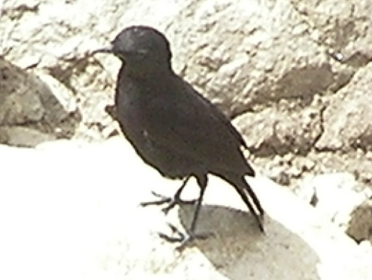
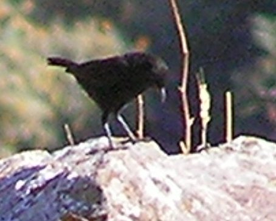
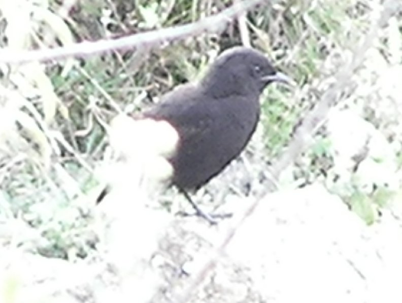

20 cm.
|  |  |  |
Smaller, more chatlike and less thrushlike than the white winged cliff chat, the two species with white wing panels are easily confused because of their proximity. The Ruppell's black chat prefers steep grassy slopes on the sunny side of the gorge. The white winged cliff chat prefers the cliff faces.
Does photo 2 (19 Feb) show a white centre to the tail?
(18th Feb) About half the birds I saw cocked their tails slowly. The other half were a little larger. Are there two species?